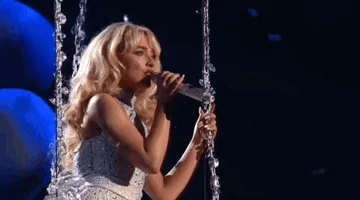
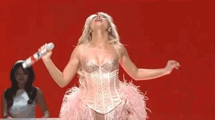
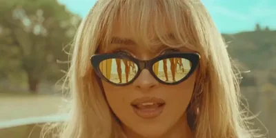

Sabrina Carpenter posted a brand new album for all of
her fans, and she's on the top 5 on the music industry.
Short n' Sweet is Sabrina
Carpenter’s sixth album.
Following the success of its lead single,
“Espresso,” the title and release
date were announced on June 3,
2024 through her social media.
The second single, “Please Please Please,”
was released on June 6,
2024 and quickly gained popularity,
becoming Carpenter’s first
number-one track on the Billboard Hot 100.
In an ‘80s-style ad-fashioned video,
Carpenter announced the album’s
tracklist on July 9, 202
A pop album
with major country, rock and R&B influences.

VMA 2024: Sabrina Carpenter appears with a new look
and makes reference to Madonna
Singer Sabrina Carpenter, 25, appeared with a
new look on the red carpet at the 2024 MTV
Video Music Awards (VMA).
As she walked the red carpet at the UBS Arena,
the artist also made reference to Madonna,
taking inspiration from a look worn by
the Queen of Pop in 1991.
Sabrina Carpenter estreia no 'SNL' e canta sucessos

No sábado (18), a cantora Sabrina Carpenter
fez sua estreia no Saturday Night Live.
Ela encerrou a 49ª temporada do programa.
As apresentações musicais
foram com seus sucessos. O single Espresso
e a segunda performance
ficou com o medley Feather e Nonsense.
Sabrina Carpenter anuncia turnê

On Thursday (18), singer Sabrina Carpenter
announced that she will take the Short n'
Sweet Tour to Europe in March 2025.
"So excited to bring the Short n' Sweet
Tour to Europe and the UK!!